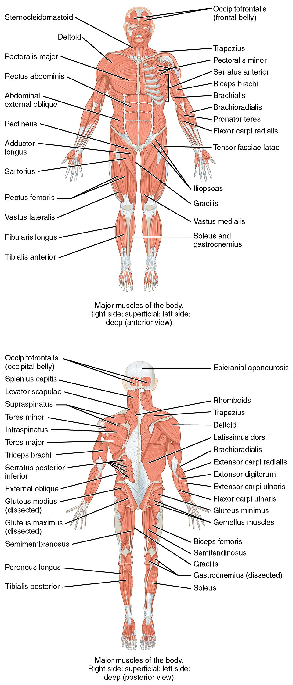
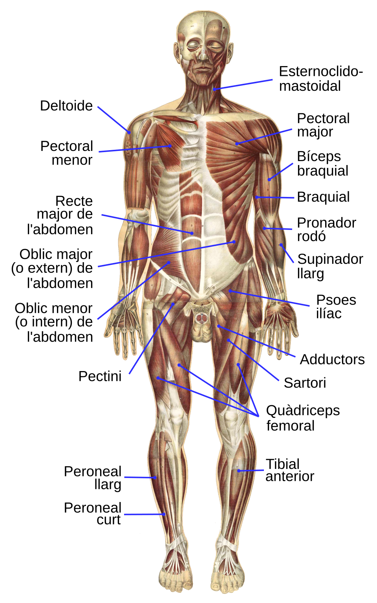
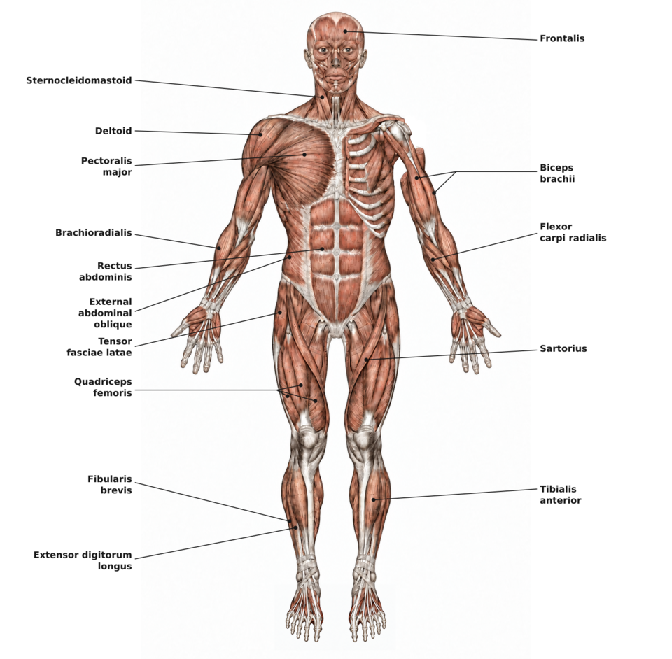
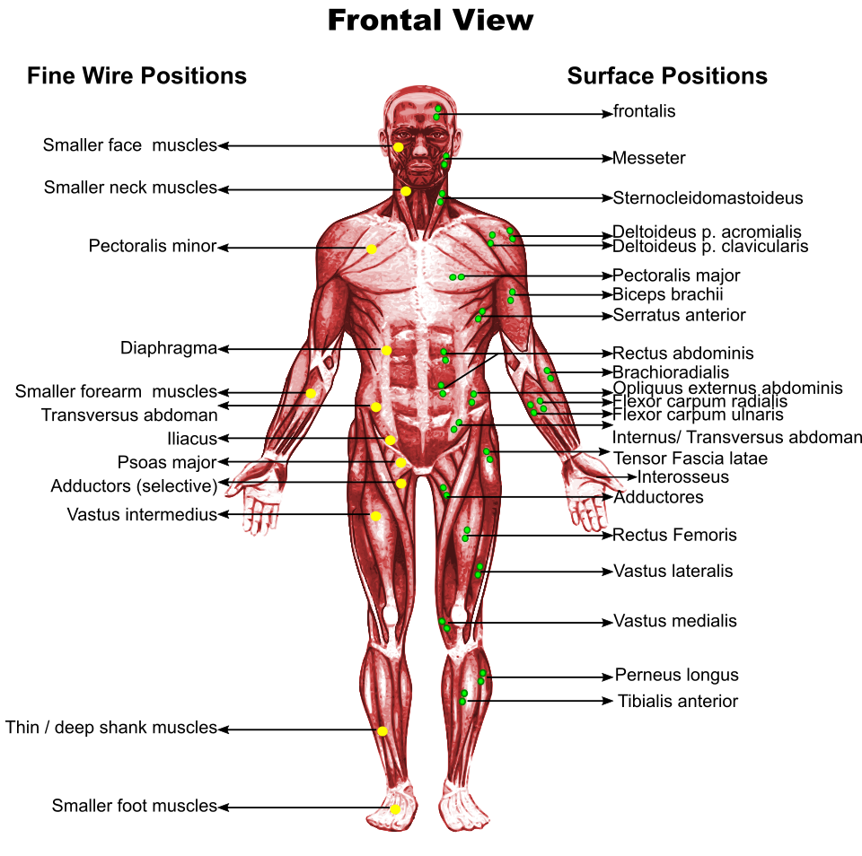
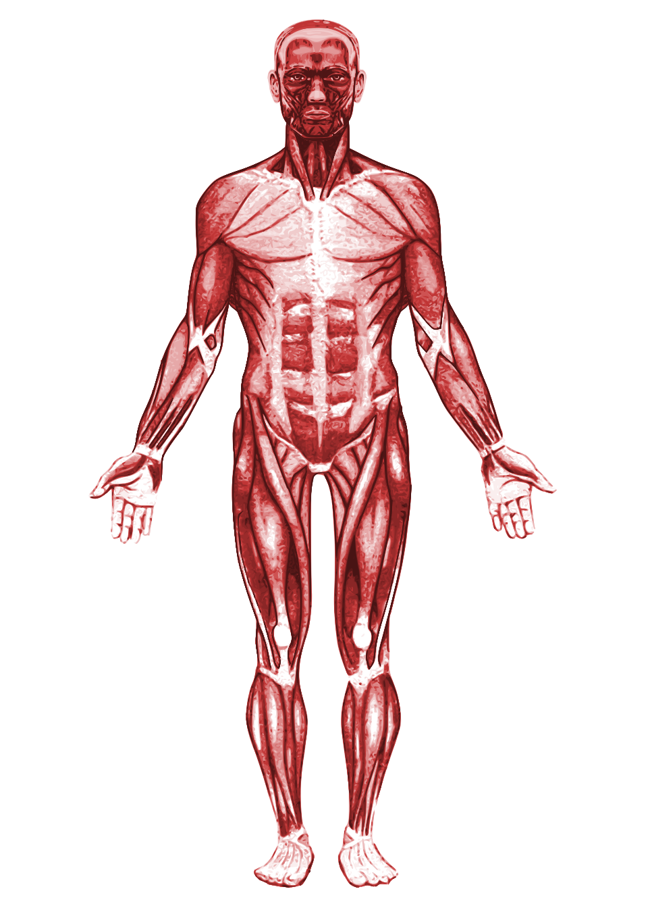
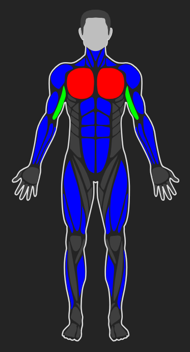
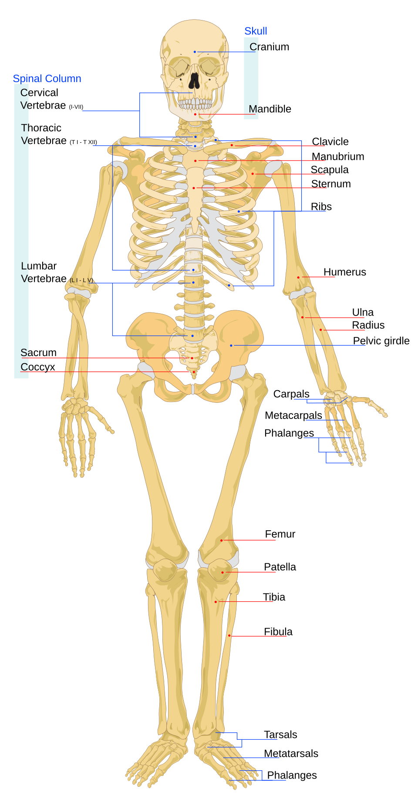
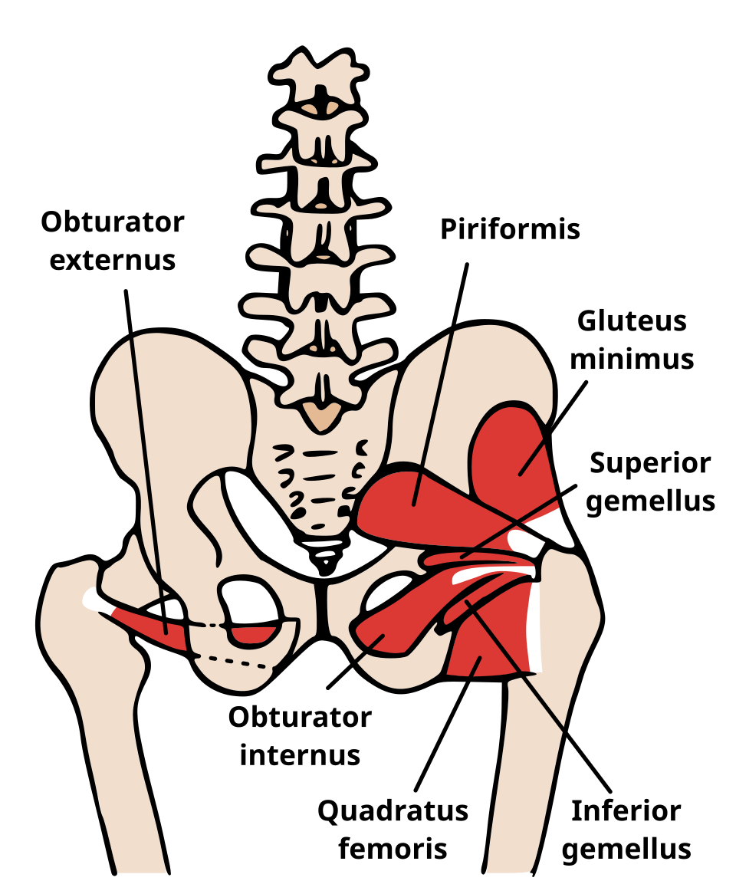

Anatomy diagram candidates
Open-licence artwork that could be the Anatomy tab's figure. Every one is tappable in the same way: a transparent region per muscle or bone over the artwork, lit up when selected, with the real name, the plain phrase, the Vietnamese, audio, and the cues that use it. The art decides how it feels.
Muscles

OpenStax Anatomy & Physiology, figure 11.5
Recommended. Textbook-clear, every muscle a yoga teacher names is drawn and distinct (iliopsoas, piriformis region, gluteus medius, serratus, erector group, QL implied). Clean enough to look calm in the app. Labels are baked into the image but sit in the margins, so the figure can be cropped out and our own tappable regions and labels laid over it.

Bouglé, Le corps humain (1899), vectorised
The most beautiful option, a real anatomical plate; it would make the tab feel like a studio wall chart. Busier and darker than OpenStax, and the share-alike licence means the app's figure files would carry the same licence (fine for a free app). Labels are Catalan and easily removed.

Häggström medical gallery
Fully labelled and public domain, but the drawing is flatter and the labels are baked over the body, so they would have to be painted out. A fallback.

EMG electrode chart (Hanbo)
A real vector body, but front only and the muscle paths are not separated by name. Not worth the work.

Muscular system.svg (Termininja)
Coarse, front only. No.

Code libraries (react-muscle-highlighter, body-muscles)
Easy to wire up, but they look like a fitness tracker, not anatomy, and the region names are gym groups ("abs", "upper back"). Wrong feel for her.
Bones and joints

Human skeleton, front and back (LadyofHats)
Recommended. The standard Wikipedia skeleton: clean, accurate, public domain, a real vector so bones can be highlighted exactly. Labels are separate text elements and come off cleanly. Covers every landmark she cues: sit bones, sacrum, tailbone, pelvis, sternum, clavicles, scapulae, spine segments, patella, heel.

Close-ups where the big figure is too small
For the hip, shoulder and foot, a zoomed detail drawing sits under the main figure. Wikimedia has serviceable ones; the hip is the one that matters most for Yin.
How the tab would be built on the recommended pair
| Layer | What |
|---|---|
| Figure | OpenStax muscles (front, back) cropped free of labels; LadyofHats skeleton (front, back). A toggle: Muscles / Bones. Pinch-zoom on the phone; three preset zooms (upper body, hips, legs). |
| Regions | About 45 muscles and 30 bones and landmarks, each a traced polygon over the artwork. Tap lights it up and opens the card; an "Also here" row shows what is deep under it (psoas under the abdominals, piriformis under the glutes). |
| Card | Real name with audio and stress, plain teaching phrase with audio, Vietnamese (standard term and everyday phrase), what it does in one line, where she feels it, 3 to 5 cues that use it in context by style (Vinyasa, Yin, Ashtanga), poses that work it and poses that stretch it, the mistake Vietnamese speakers make with the word, and the neighbouring structures. |
| Index | An A to Z list under the figure, searchable in English or Vietnamese, grouped by region (shoulder girdle, spine and trunk, hip, knee and lower leg, foot, arm and hand), for when she knows the word and wants the card. |
| Actions | A third view, "Movements": flexion, extension, rotation, abduction, adduction, pronation, supination, plantar and dorsiflexion, each with the plain verb teachers use ("fold", "arch", "turn out") and a cue. |